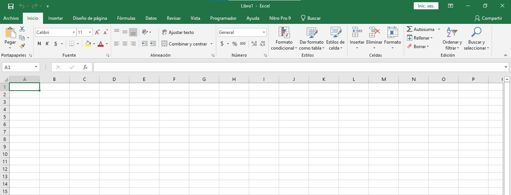

Excel es un programa que permite crear, asi como manipular, toda clase de tablas de datos, graficos, bases de datos, etc. Lo más interesante de este programa es que puedes llegar a desarrollar multitud de pequeñas aplicaciones avanzadas que se convertir en potentes herramientas de trabajo, para generar estas aplicaciones es necesario utilizar una serie de comandos que permiten agrupar, buscar o clasificar un conjunto de datos como veremos a continiacion

suma
La funcion como, su nombre indica, suma valores para llegar a un resultado concreto. Puede sumar valores individuales, referencias o rangos de celda . Por ejemplo: =SUMA(A2:A10) Suma los valores de las celdas a2:10, o por ejemplo =SUMA(A2:A10, C2:C10) Suma los valores de las celdas a2:10, así como las celdas C2: C10.
Promedio
La funcion promedio cumple la fincion de sumar una serie de valores y despues dividir esas suma por el respectivo numero de valores, de esa forma sacando el promedio de los valores dados, esto lo puede hacer con valores individuales o con rangos de celdad. Por ejemplo: =PROMEDIO(L4:L14), en el anterior ejemplo solo se selecciona el conjunto de valores que se quiere promediar, tambien existe la opcion de opcion de promediar un conjunto bajo una condicion. Por ejemplo: =PROMEDIO.SI.CONJUNTO(L4:L14;M4:M14;"<200"). Para esto se escojen dos conjuntos de valores diferentes y despues se añade el condicional.
Indice
a funcion indice en Excel es la encargada de devolver el valor de una celda dentro de una matriz o tabla dada la posición de la fila y/o la columna que ocupa dentro de ella. Por ejemplo: =INDICE(J5:N5;L19) . Para usar esta funcion se selecciona una fila o una columna y posteriormente se selecciona una casilla dentro de la cual se ingresara el numero de la columna de la cual se quiere saber el valor
Contar
La funcion contar cuenta la cantidad de celdas que contienen numeros y cuenta los numeros dentro de la lista de argumentos.Por ejemplo: =CONTAR(L4:L14), tambien existe la funcion contar. si que cumple la misma funcion pero con un condicional, por ejemplo: =CONTAR.SI(L4:L14;"<30") , para esto despues de las celdas se añade el condicional entre comillas.
Buscarv
Buscarv es una de las funciones mas utiles y usadas en excel, esta consiste en buscar un determminado valor dentro de una tabla o un conjunto previamente seleccionado, por ejemplo: =BUSCARV(H17;K4:M14;3;FALSO) , para usar esta funcion primero se seleccion el espacio donde despues se ingresara el valor que se quiere buscar, luego se selecciona el conjunto de espacios dentro de los cuales se va a buscar, luego la columna en la cual se va a buscar y por ultimo FAlSO para decir que es una busqueda literal.